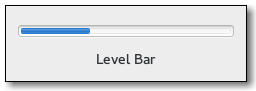

Gtk.LevelBar¶
Example¶

- Subclasses:
None
Methods¶
- Inherited:
Gtk.Widget (278), GObject.Object (37), Gtk.Buildable (10), Gtk.Orientable (2)
- Structs:
class |
|
class |
|
|
|
|
|
|
|
|
|
|
|
|
|
|
|
|
|
|
|
|
|
|
Virtual Methods¶
- Inherited:
|
Properties¶
- Inherited:
Name |
Type |
Flags |
Short Description |
|---|---|---|---|
r/w/en |
Invert the direction in which the level bar grows |
||
r/w/en |
Maximum value level that can be displayed by the bar |
||
r/w/en |
Minimum value level that can be displayed by the bar |
||
r/w/en |
The mode of the value indicator displayed by the bar |
||
r/w/en |
Currently filled value level of the level bar |
Style Properties¶
- Inherited:
Name |
Type |
Default |
Flags |
Short Description |
|---|---|---|---|---|
|
|
d/r/w |
Minimum height for blocks that fill the bar |
|
|
|
d/r/w |
Minimum width for blocks that fill the bar |
Signals¶
- Inherited:
Name |
Short Description |
|---|---|
Emitted when an offset specified on the bar changes value as an effect to |
Fields¶
- Inherited:
Name |
Type |
Access |
Description |
|---|---|---|---|
parent |
r |
Class Details¶
- class Gtk.LevelBar(**kwargs)¶
- Bases:
- Abstract:
No
- Structure:
The
Gtk.LevelBaris a bar widget that can be used as a level indicator. Typical use cases are displaying the strength of a password, or showing the charge level of a battery.Use
Gtk.LevelBar.set_value() to set the current value, andGtk.LevelBar.add_offset_value() to set the value offsets at which the bar will be considered in a different state. GTK will add a few offsets by default on the level bar:Gtk.LEVEL_BAR_OFFSET_LOW,Gtk.LEVEL_BAR_OFFSET_HIGHandGtk.LEVEL_BAR_OFFSET_FULL, with values 0.25, 0.75 and 1.0 respectively.Note that it is your responsibility to update preexisting offsets when changing the minimum or maximum value. GTK+ will simply clamp them to the new range.
- Adding a custom offset on the bar
static GtkWidget * create_level_bar (void) { GtkWidget *widget; GtkLevelBar *bar; widget = gtk_level_bar_new (); bar = GTK_LEVEL_BAR (widget); // This changes the value of the default low offset gtk_level_bar_add_offset_value (bar, GTK_LEVEL_BAR_OFFSET_LOW, 0.10); // This adds a new offset to the bar; the application will // be able to change its color CSS like this: // // levelbar block.my-offset { // background-color: magenta; // border-style: solid; // border-color: black; // border-style: 1px; // } gtk_level_bar_add_offset_value (bar, "my-offset", 0.60); return widget; }
The default interval of values is between zero and one, but it’s possible to modify the interval using
Gtk.LevelBar.set_min_value() andGtk.LevelBar.set_max_value(). The value will be always drawn in proportion to the admissible interval, i.e. a value of 15 with a specified interval between 10 and 20 is equivalent to a value of 0.5 with an interval between 0 and 1. WhenGtk.LevelBarMode.DISCRETEis used, the bar level is rendered as a finite number of separated blocks instead of a single one. The number of blocks that will be rendered is equal to the number of units specified by the admissible interval.For instance, to build a bar rendered with five blocks, it’s sufficient to set the minimum value to 0 and the maximum value to 5 after changing the indicator mode to discrete.
Gtk.LevelBarwas introduced in GTK+ 3.6.The
Gtk.LevelBarimplementation of theGtk.Buildableinterface supports a custom<offsets>element, which can contain any number of<offset>elements, each of which must have “name” and “value” attributes.- CSS nodes
levelbar[.discrete] ╰── trough ├── block.filled.level-name ┊ ├── block.empty ┊Gtk.LevelBarhas a main CSS node with name levelbar and one of the style classes .discrete or .continuous and a subnode with name trough. Below the trough node are a number of nodes with name block and style class .filled or .empty. In continuous mode, there is exactly one node of each, in discrete mode, the number of filled and unfilled nodes corresponds to blocks that are drawn. The block.filled nodes also get a style class .level-name corresponding to the level for the current value.In horizontal orientation, the nodes are always arranged from left to right, regardless of text direction.
- classmethod new()[source]¶
- Returns:
a
Gtk.LevelBar.- Return type:
Creates a new
Gtk.LevelBar.New in version 3.6.
- classmethod new_for_interval(min_value, max_value)[source]¶
- Parameters:
- Returns:
- Return type:
Utility constructor that creates a new
Gtk.LevelBarfor the specified interval.New in version 3.6.
- add_offset_value(name, value)[source]¶
-
Adds a new offset marker on self at the position specified by value. When the bar value is in the interval topped by value (or between value and
Gtk.LevelBar:max-valuein case the offset is the last one on the bar) a style class namedlevel-name will be applied when rendering the level bar fill. If another offset marker named name exists, its value will be replaced by value.New in version 3.6.
- get_inverted()[source]¶
-
Return the value of the
Gtk.LevelBar:invertedproperty.New in version 3.8.
- get_max_value()[source]¶
- Returns:
a positive value
- Return type:
Returns the value of the
Gtk.LevelBar:max-valueproperty.New in version 3.6.
- get_min_value()[source]¶
- Returns:
a positive value
- Return type:
Returns the value of the
Gtk.LevelBar:min-valueproperty.New in version 3.6.
- get_mode()[source]¶
- Returns:
- Return type:
Returns the value of the
Gtk.LevelBar:modeproperty.New in version 3.6.
- get_offset_value(name)[source]¶
- Parameters:
- Returns:
Trueif the specified offset is found- value:
location where to store the value
- Return type:
Fetches the value specified for the offset marker name in self, returning
Truein case an offset named name was found.New in version 3.6.
- get_value()[source]¶
- Returns:
a value in the interval between
Gtk.LevelBar:min-valueandGtk.LevelBar:max-value- Return type:
Returns the value of the
Gtk.LevelBar:valueproperty.New in version 3.6.
- remove_offset_value(name)[source]¶
-
Removes an offset marker previously added with
Gtk.LevelBar.add_offset_value().New in version 3.6.
- set_inverted(inverted)[source]¶
-
Sets the value of the
Gtk.LevelBar:invertedproperty.New in version 3.8.
- set_max_value(value)[source]¶
- Parameters:
value (
float) – a positive value
Sets the value of the
Gtk.LevelBar:max-valueproperty.You probably want to update preexisting level offsets after calling this function.
New in version 3.6.
- set_min_value(value)[source]¶
- Parameters:
value (
float) – a positive value
Sets the value of the
Gtk.LevelBar:min-valueproperty.You probably want to update preexisting level offsets after calling this function.
New in version 3.6.
- set_mode(mode)[source]¶
- Parameters:
mode (
Gtk.LevelBarMode) – aGtk.LevelBarMode
Sets the value of the
Gtk.LevelBar:modeproperty.New in version 3.6.
- set_value(value)[source]¶
- Parameters:
value (
float) – a value in the interval betweenGtk.LevelBar:min-valueandGtk.LevelBar:max-value
Sets the value of the
Gtk.LevelBar:valueproperty.New in version 3.6.
Signal Details¶
- Gtk.LevelBar.signals.offset_changed(level_bar, name)¶
- Signal Name:
offset-changed- Flags:
- Parameters:
level_bar (
Gtk.LevelBar) – The object which received the signalname (
str) – the name of the offset that changed value
Emitted when an offset specified on the bar changes value as an effect to
Gtk.LevelBar.add_offset_value() being called.The signal supports detailed connections; you can connect to the detailed signal “changed::x” in order to only receive callbacks when the value of offset “x” changes.
New in version 3.6.
Property Details¶
- Gtk.LevelBar.props.inverted¶
- Name:
inverted- Type:
- Default Value:
- Flags:
Level bars normally grow from top to bottom or left to right. Inverted level bars grow in the opposite direction.
New in version 3.8.
- Gtk.LevelBar.props.max_value¶
- Name:
max-value- Type:
- Default Value:
1.0- Flags:
The
Gtk.LevelBar:max-valueproperty determaxes the maximum value of the interval that can be displayed by the bar.New in version 3.6.
- Gtk.LevelBar.props.min_value¶
- Name:
min-value- Type:
- Default Value:
0.0- Flags:
The
Gtk.LevelBar:min-valueproperty determines the minimum value of the interval that can be displayed by the bar.New in version 3.6.
- Gtk.LevelBar.props.mode¶
- Name:
mode- Type:
- Default Value:
- Flags:
The
Gtk.LevelBar:modeproperty determines the wayGtk.LevelBarinterprets the value properties to draw the level fill area. Specifically, when the value isGtk.LevelBarMode.CONTINUOUS,Gtk.LevelBarwill draw a single block representing the current value in that area; when the value isGtk.LevelBarMode.DISCRETE, the widget will draw a succession of separate blocks filling the draw area, with the number of blocks being equal to the units separating the integral roundings ofGtk.LevelBar:min-valueandGtk.LevelBar:max-value.New in version 3.6.
- Gtk.LevelBar.props.value¶
- Name:
value- Type:
- Default Value:
0.0- Flags:
The
Gtk.LevelBar:valueproperty determines the currently filled value of the level bar.New in version 3.6.